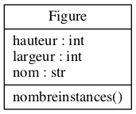

Suite du cours online
P. Buesser et A. Villa
Les slides verticaux contiennent des commentaires et additions sur un même slide. Vous pouvez y accédez avec les flèches de navigation
Niveau 1
Utiliser la barre d'espace pour naviguer à travers tout les slides.
Pressez la touche ESC pour avoir une vue générale des slides.
Niveau 3
- Des données du web peuvent être intégrées, il est donc possible que certains slides apparaissent différemment sans connection.
- Possible de copier-coller les sections de code sans problèmes de tabulations
Niveau 4
- Pour zoomer : maintenez alt (ctrl sous Linux)et cliquez sur un élément. Cliquez encore une fois pour revenir.
- Le texte contient des hyperliens vers des autres slides.
- Pour revenir après avoir cliqué sur un de ces liens, utilisez les flèches de navigation du browser (Firefox, etc).
Retour au slide principal.
3.16 – Destruction des instances
(slide 41 des anciennes slides)
La destruction d’une instance provoque
un appel au destructeur de la classe
| Le destructeur réalise le travail inverse du constructeur. En général, Python se débrouille très bien tout seul pour effacer automatiquement tout les objets inatteignables à l'aide du collecteur de déchets (garbage collector). |
3.16 – Destruction des instances: del

class Figure() :
compteur = 0
def __init__(self, largeur, hauteur) :
self.nom = ''
self.largeur = largeur
self.hauteur = hauteur
Figure.compteur += 1
def __del__(self) :
Figure.compteur -= 1
@staticmethod
def nombreinstances() :
return Figure.compteur
Notez aussi
3.16 – Destruction des instances: del
rect = Rectangle(4, 5)
del rect
3.16 – Destruction des instances: del
from figures import * # importe figures.py
print Figure.nombreinstances() # méthode de classe
#->0
rect = Rectangle(4, 5) # appel au constructeur
print rect.perimetre()
#->18.0
print Figure.nombreinstances()
#->1
cercle = Cercle(5) # appel au constructeur
cercle.perimetre() # polymorphisme :-)
#->31.4159265359
print Figure.nombreinstances()
#->2
del rect # appel au destructeur
print Figure.nombreinstances()
#->1
rect
#->NameError: name 'rect' is not defined
3.17 – Garbage collector : le ramasse-miette
Python gère la mémoire avec un garbage collector qui recycle automatiquement la mémoire qui n’est plus utilisée.
Périodiquement, le garbage collector (gc) vérifie le nombre de références pour chaque objet (variables, liste contenant l'objets etc.) et recycle les objets inaccessibles (recycle la mémoire de l'objet).
Utilisation explicite par le programmeur :
>>> import gc
>>> gc.collect()# retourne nbr objets inaccessibles et les efface
12
>>> gc.collect()
0
3.17 – Garbage collector : Exemple
Considérons la structure en arbre suivante (qui n’est pas une structure de classes), on veut la représenter à l’aide d’instances d’une seule classe:

L'arbre représente une hiérarchie de direction ou des secteurs dans une entreprise,
chaque noeud possède un noeud parent et plusieurs noeuds enfants. On va donc créer une classe
avec ces deux attributs : un noeud parent
Chaque noeud de l'arbre sera une instance de cette classe.
3.17 – Garbage collector : Exemple
La classe
class Niv():
compteur = 0
def __init__(self, nom):
self.nom = nom
self.sup = None #par défaut pas de supérieur
self.inf = [] #par défaut liste vide de subalternes
Niv.compteur += 1
@staticmethod
def nombreinstances() : return Niv.compteur
def addNiv(self, niveau):
niveau.sup = self
self.inf.append(niveau)
def organigramme(self):
for f in self.inf:
print self.nom, "dirige ", f.nom
f.organigramme()
- L'attribut
nom contient le nom du noeud (p. ex "dir"). - On déclare une méthode de classe pour compter les instances (avec
@staticmethod ) comme dans la classe Figure. - Ligne 12: la fonction
addNiv permet d'ajouter un élément dans la liste des enfants. Le parent de ce noeud enfant est donc le noeud qui rajoute cet enfant, représenté par la variableself (ligne 13)
- Ligne 16 : la méthode
organigramme permet d'afficher l'arbre par récurrence selon l'algorithme ci-dessous :
def organigramme(self):
parcours tout les enfant du noeud self:
imprime chaque enfant
pour chaque enfant rapelle organigramme()
- L'appel récursif permet d'afficher le sous arbre à partir d'un enfant.
3.17 – Garbage collector : Exemple
On peut maintenant créer les instances correspondant au schéma de l'arbre :
>>> pdg = Niv("dir")
>>> pdg.organigramme()
>>> pdg.addNiv(Niv("export"))
>>> pdg.addNiv(Niv("natl"))
>>> pdg.addNiv(Niv("assist"))
>>> print pdg.inf
[<__main__.Niv instance at 0x10a454ea8>, <__main__.Niv instance at 0x10a45a440>,
<__main__.Niv instance at 0x10a45a7a0>]
>>> pdg.organigramme()
dir dirige export
dir dirige natl
dir dirige assist
suite du code slide ci-dessous...
...suite
>>> pdg.inf[0].addNiv(Niv("Am"))
>>> pdg.inf[0].addNiv(Niv("Asia"))
>>> pdg.inf[0].addNiv(Niv("Eu"))
>>> pdg.inf[0].addNiv(Niv("RoW"))
>>> pdg.inf[2].addNiv(Niv("CustSat"))
>>> pdg.inf[2].addNiv(Niv("Repair"))
>>> pdg.inf[2].inf[1].addNiv(Niv("site"))
>>> pdg.inf[2].inf[1].addNiv(Niv("remote"))
>>> pdg.organigramme()
dir dirige export
export dirige Am
export dirige Asia
export dirige Eu
export dirige RoW
dir dirige natl
dir dirige assist
assist dirige CustSat
assist dirige Repair
Repair dirige site
Repair dirige remote
Explications :
- On créait le noeud racine de l'arbre
pdg = Niv("dir") - On rajoute les noeuds enfants de pdg avec des commandes du type :
pdg.addNiv(Niv("export")) - Pour chacun de ces enfants on rajoute leurs enfants. Par exemple
pdg.inf[0].addNiv(Niv("Am")) ajoute le noeud"Am" àpdg.inf[0] (le premier enfant depdg ). - On continue jusqu'à avoir créé tout l'arbre...
- Remarque : cette manière de construire l'arbre n'est pas très pratique, il serait plus facile de lire un fichier qui contient les informations de l'arbre de manière structurées
- Exercice : créez votre propre méthode d'affichage de l'arbre, ajoutez-la au code et testez-la. Utilisez le code des slides ou le code en lien ci-dessous.
- Lien vers le code complet Niv.py qui se trouve dans le dossier "codesPython/" des slides.
3.17 – Garbage collector : Exemple
On va tester le "garbage collector"
>>> import gc
>>> pdg.nombreinstances()
12
>>>
>>> pdg.inf[1].nom
'natl'
>>> del pdg.inf[1]
>>> print gc.collect(), "objets inatteignables"
0 objets inatteignables
>>> # parce que 'natl' n'avait pas de subalternes
>>> pdg.inf[1].nom
"assist"
>>> del pdg.inf[1]
#gc.collect efface les objets inatteignables et renvoie leur nombre
>>> print gc.collect(), "objets inatteignables"
15 objets inatteignables
# parce que 'assist' a été effacé avec la liste des subalternes par
#l'appel de gc.collect()
>>> print gc.collect(), "objets inatteignables"
0 objets inatteignables
- Ligne 1 : On importe le module gc
- Ligne 7 : On efface le deuxième enfant de "pdg", comme il ne possède pas d'enfant, aucun noeud ne sera rendu inatteignable
- Ligne 8 : la commande
gc.collect() force le recyclage de la mémoire et renvoie le nombre d'objets qui étaient inatteignables. Il y en a 0. - Ligne 13 : Par contre si on efface un noeud qui possède des sous-noeuds
pdg.inf[1] , ces derniers ne seront plus atteignables.
- Ligne 15-16 : L'appel
print gc.collect() va bien afficher un certain nombre d'objets inatteignables : 15. - Les 15 objets inatteignables sont comptabilisés de manière compliquée (en prenant en compte les attributs).
- Un deuxième appel à
gc.collect() affiche bien zéro puisque l'appel précédent a forcé le "nettoyage" de la mémoire.
3.18 – Comparaison d'objets
Les comparaisons entre objets peuvent s'avérer compliquées, par défaut python compare les adresses mémoire.
Lorsqu'on déclare un objet:
Python crée une référence vers l'objet créé
3.18 – Comparaison d'objets
Deux objets
si les variables
Problème : comment déterminer
si le contenu de
3.18 – Comparaison d'objets
La notion d’égalité est différente de la notion d’identité
>>> figA = figB = Figure(3, 4)
>>> figC = Figure(3, 4)
>>>
>>> figA == figB # sont bien identiques (références)
True
>>>
>>> figA == figC # sont bien égaux (valeurs)
False # mais euh ?!
>>>
- Ligne 7 : La comparaison de deux objets différents renvoie la valeur
False car cela compare les deux adresses mémoire qui sont différentes. figA etfigC on les deux été construit à l'aide du constructeurFigure() et donc pour chacun un objet a été créé en mémoire. Alors quefigB est juste une copie de l'adresse defigA .